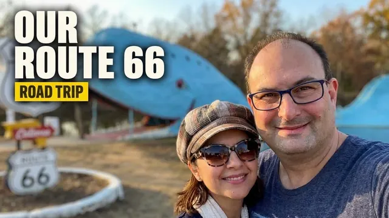

Route 66
One stop at a time, from Missouri to the Santa Monica Pier.
- World’s Largest Rocking ChairFanning, Missouri
- Mule Trading PostRolla, Missouri
I stopped at the Mule Trading Post, a longtime Route 66 landmark in Rolla. The old mule sign caught my eye and made this feel like one of those classic roadside stops.
- Totem Pole Trading PostRolla, Missouri
- Devil’s ElbowMissouri
- Uranus Fudge Factory & General StoreUranus, Missouri
- MarshfieldMissouri
- GalenaKansas
- Cars on the RouteGalena, Kansas
- Rainbow BridgeKansas
- Phillips 66 Visitors’ CenterBaxter Springs, Kansas
- Ed Galloway’s Totem Pole ParkFoyil, Oklahoma
Just off Route 66 near Foyil, I stopped to see Ed Galloway’s Totem Pole Park. The giant, colorful folk-art totem pole is an unexpected sight and a memorable detour.
- The Blue WhaleCatoosa, Oklahoma
- Route 66 RisingTulsa, Oklahoma
- The Golden DrillerTulsa, Oklahoma
- Buck Atom’s Cosmic CuriosTulsa, Oklahoma
- Pops 66Arcadia, Oklahoma
In Arcadia, the giant pop bottle outside POPS 66 made this stop hard to miss. I enjoyed the fun roadside setting and all the different sodas inside.
- Braum’s Giant Milk BottleOklahoma City, Oklahoma
I stopped to see the Milk Bottle Grocery, the small Route 66 landmark with the giant Braum’s milk bottle on its roof. It’s a wonderfully unusual sight in the middle of the city.
- Lucille’s Service StationHydro, Oklahoma
In Hydro, I visited Lucille’s Historic Route 66 Gas Station, once run by Lucille Hamons. Seeing the old station made me think about the travelers she welcomed along the Mother Road.
- Cadillac RanchAmarillo, Texas
- Route 66 MidpointTexas
- TucumcariNew Mexico
- The Blue HoleNew Mexico
- Lucero CanyonNew Mexico
- Pecos National Historical ParkNew Mexico
- Petrified ForestArizona
- Standin’ on the CornerWinslow, Arizona
- Lowell ObservatoryFlagstaff, Arizona
- Santa Monica PierCalifornia
Where we stayed
- Tulsa Club HotelTulsa, Oklahoma
- Colcord HotelOklahoma City, Oklahoma
Where we ate
- Andolini's PizzeriaTulsa, Oklahoma
- Pizzeria GustoOklahoma City, Oklahoma
- Sunnyside DinerOklahoma City, Oklahoma
- Hideaway PizzaOklahoma City, Oklahoma
- Dado's PizzaOklahoma City, Oklahoma